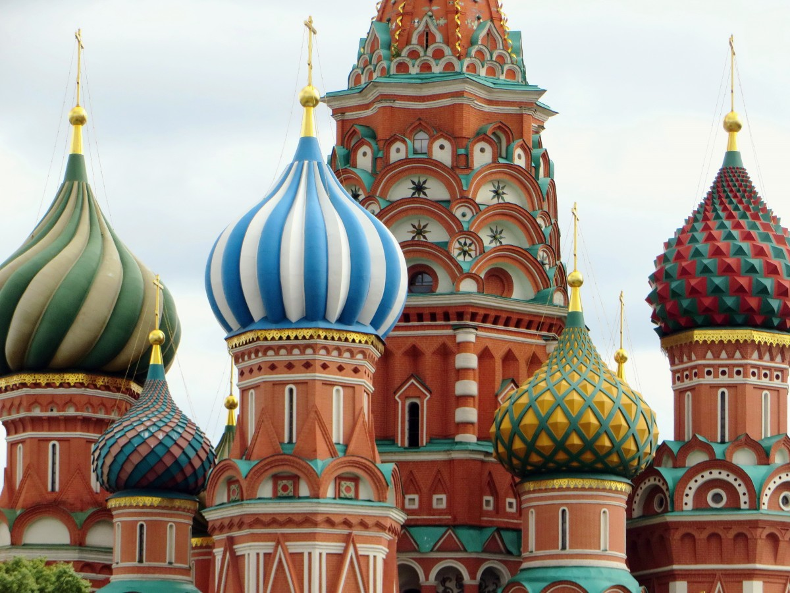

Rusland - Guide til overlevselse

Se vores billeder fra Rusland
3.s i Rusland KLIK her!
Do's n dont's
Do's
- Køb et simkort, det koster kun 30 kr
- Få appen Gett og også Yadi taxi - så kan du køre uber til 20 kr
- Smag maden, den er ikke så slem!
- HUSK den lille slip, som kassedamen putter i dit pas. Den lader ved første blik til bare at være en kvittering, skrevet på en ældgammel skrivemaskine på bedste Soviet-manér, men er faktisk nødvendigt for udrejsen en uge efter.
Rip Kalle, der mistede den og derfor heller ikke måtte bo på hotellet. Rusland har meget kontrol, og har du ikke papirene i orden kan det godt være du forsvinder, ligesom Kalle.
Dont's
- Ikke vær overlegen, det er billigt for dig, men ikke for dem
- Ik flab over for russian immigration, ved ik hvad der sker, men det er nok ikke så rart
- At tage for meget med, halvdelen af 3.s havde overvægt på vej hjem
Husk turen selvfølgelig er uden alkohol. Man må jo ik drikke ;)
(selvom det er 4,32kr for en halv liter Tuborg Eksport).